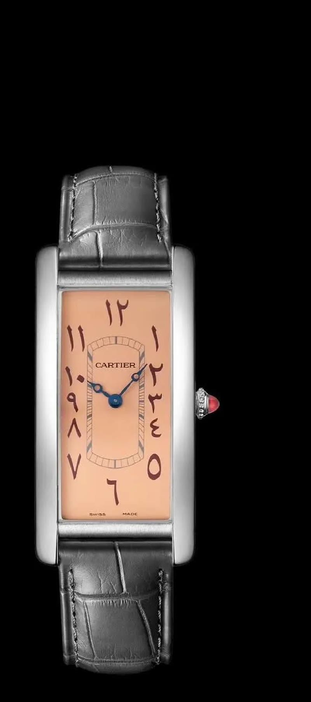

Home · The Collection · Richard Mille

Richard Mille · RM 65-01
Richard Mille RM 65-01 Automatic Winding Split-Seconds Chronograph
RRR · Ultra Rare — 150 pieces
| Movement | Automatic, Caliber RMAC4 |
| Case | Carbon TPT |
| Dial | Skeleton |
| Case size | 44.5mm x 49.94mm |
| Power reserve | 55 hours |
| Complications | Split-seconds chronograph, 30-minute counter, Function selector |
| Year | 2020 |
| Valuation | US$ 1,100,000 |
The RM 65-01 represents a landmark achievement in Richard Mille's catalog — the first in-house automatic split-seconds chronograph. The Carbon TPT construction keeps the watch incredibly light while the sophisticated movement through the sapphire display offers a captivating mechanical spectacle. A perfect union of F1-inspired engineering and haute horlogerie.